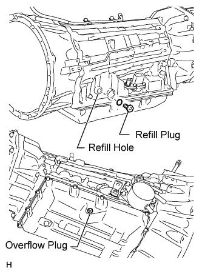
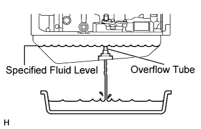
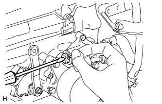
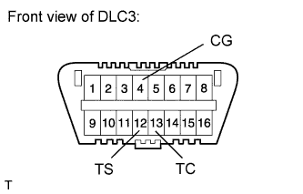
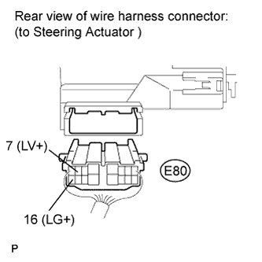
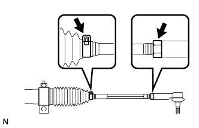
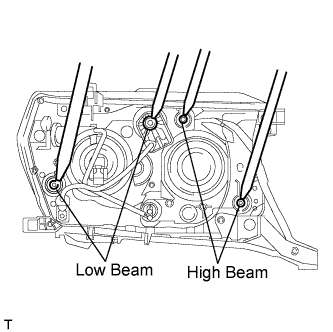
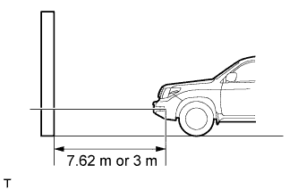
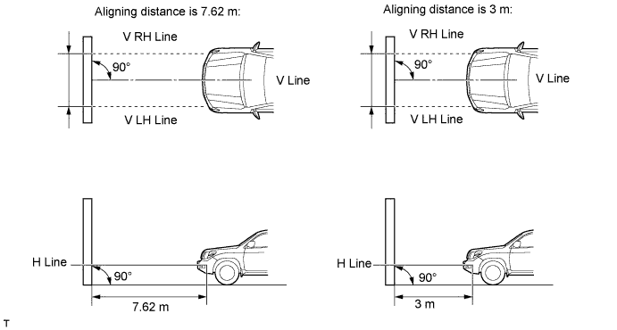

REPAIR INSTRUCTION > INITIALIZATION |
| Procedures necessary when ECU or other parts are replaced |
| Replacement Part | Necessary Procedures | Effects / Inoperative Functions When Necessary Procedures are not Performed | Notes |
| Fuel injector (1VD-FTV) | Injector compensation code registration | DTC B1603 is output | - |
| Fuel supply pump (1VD-FTV) | ECM initialization | Engine starting | - |
| ECM (1VD-FTV) | ECU communication ID registration | Engine starting | - |
| Any of shift solenoid valves | Reset memory | Large shift shock | - |
| Transmission wire | Add and adjust the ATF level | Automatic transmission assembly damaged | - |
| Valve body and shift solenoid valve | Add and adjust the ATF level | Automatic transmission assembly damaged | - |
| Perform the Reset Memory (AT initialization) | Large shift shock | - | |
| Oil cooler and oil cooler tube | Add and adjust the ATF level | Large shift shock | - |
| Park/neutral position switch | Adjust the park/neutral position switch |
| - |
| Transmission floor shift assembly | Adjust the shift lever position |
| - |
| Automatic transmission assembly | Add and adjust the ATF level | Automatic transmission assembly damaged | - |
| Perform the Reset Memory (AT initialization) | Large shift shock | - | |
| Inspect and adjust clutch pedal |
| - |
| Inspect and adjust clutch pedal |
| - |
| Suspension control ECU | Vehicle height offset calibration | Vehicle height sensor date may be affected due to installation position, or vehicle height recognition may be erroneous | After vehicle height offset calibration is performed, it is necessary to calibrate the yaw rate sensor |
| Height control sensor | Vehicle height offset calibration | Vehicle height sensor date may be affected due to installation position, or vehicle height recognition may be erroneous | After vehicle height offset calibration is performed, it is necessary to calibrate the yaw rate sensor |
|
|
| Removed/installed or replaced |
| Master cylinder solenoid (Skid control ECU) | G sensor zero point calibration | The brake control system does not operate properly | - |
| G sensor |
| The brake control system does not operate properly | - |
| Master cylinder solenoid (Skid control ECU) | Yaw rate and G sensor zero point calibration | The brake control and dynamic control systems do not operate properly | - |
| Yaw rate and G sensor |
| The brake control and dynamic control systems do not operate properly | - |
| Vehicle height adjustment |
| The brake control and dynamic control systems do not operate properly | w/ active height control system |
| Check brake pedal height |
| - |
| Adjust parking brake lever travel |
| - |
| Calibration |
| - |
| Steering angle sensor | Initialization |
| - |
| Steering column | Steering off center adjustment | Steering system does not operate normally | - |
| Rear television camera | Rear television camera optional axis (Camera position setting) | Vehicle width extension lines and expected course are deviated | Replace or installation angle of the rear television camera changes because of the removal and installation of the rear television camera |
| Parking assist ECU |
| Parking assist monitor system | Replace or installation angle of the rear television camera changes because of the removal and installation of the rear television camera |
| Registration |
| - |
| Initialize the motor |
| |
| Initialize sliding roof system |
| - |
| Headlight assembly | Adjustment | Beam axis deviation | - |
| Fog light assembly | Adjustment | Beam axis deviation | - |
| Front bumper | Adjustment | Beam axis deviation | - |
| REGISTRATION RELATED TO ECD SYSTEM |
 |
REGISTRATION
After replacing fuel injector(s) with new one(s), input compensation code(s) of fuel injector(s) into ECM as follows:
Register compensation code.

 |
 |
 |
 |
 |
 |
 |
 |
READING REGISTERED DATA
When replacing ECM with a new one, input all fuel injector compensation codes into new ECM as follows:
Read and save fuel injector compensation codes.

|
|
|
 |
|
 |
 |
|
|
|
|
|
|
|
|
 |
FUEL SUPPLY PUMP INITIALIZATION PROCEDURE
Connect the intelligent tester to the DLC3.
Turn the engine switch on (IG).
Turn the tester on.
Enter the following menus: Powertrain / Engine / Utility / Supply Pump Initialization.
Press "Next".
 |
Press "Next".
 |
Press "Exit".
Start the engine to check if the initialization is complete. If the engine cannot be started, repeat the initialization procedures from the beginning.
Idle the engine for at least 1 minute under the following conditions:
Initialization is complete.
| INITIALIZATION RELATED TO AUTOMATIC TRANSMISSION SYSTEM |
RESET MEMORY
Connect the intelligent tester to the DLC3.
Turn the engine switch on (IG).
Turn the intelligent tester on.
Enter the following menus: Powertrain / Engine and ECT / Utility / Reset Memory.
| ADJUSTMENT FOR AUTOMATIC TRANSMISSION FLUID (A750F) |
 |
BEFORE FILLING TRANSMISSION
 |
TRANSMISSION PAN FILL
Remove the refill plug and overflow plug.
Fill the transmission through the refill hole until fluid begins to trickle out of the overflow tube.
Reinstall the overflow plug.
TRANSMISSION FILL
 |
w/o Air Cooled Transmission Oil Cooler (w/ ATF Warmer):
Push the shaft of the thermostat and fix it in place.
 |
Fill the transmission with the amount of fluid listed in the table below.
| Repair | Fill Amount |
| Transmission pan and drain plug removal | 1.7 liters (1.8 US qts, 1.5 Imp. qts) |
| Transmission valve body removal | 4.3 liters (4.5 US qts, 3.8 Imp. qts) |
| Torque converter removal | 5.4 liters (5.7 US qts, 4.8 Imp. qts) |
Reinstall the refill plug to prevent the fluid from splashing.
FLUID CIRCULATION
Allow the engine to idle with the air conditioning off.
Move the shift lever through the entire gear range to circulate fluid.
ADJUST FLUID TEMPERATURE
When using the intelligent tester:
 |
When not using the intelligent tester:
Slowly move the shift lever from P to S, then change the gears from 1st to 6th. Then return the shift lever to P.
 |
Move the shift lever to D, and quickly move back and forth between N and D (once within 1.5 seconds) for at least 6 seconds. This will activate the fluid temperature detection mode.
When using the intelligent tester:
When not using the intelligent tester:
Allow the engine to idle until the fluid temperature reaches 38 to 46°C (100 to 115°F).
The indicator (D) will come on again when the fluid temperature reaches 38°C (100°F) and will blink when it exceeds 46°C (115°F).
| Below Proper Temperature | Proper Temperature | Higher than Proper Temperature |
| Data List [A/T Oil Temperature 1] 38°C (100°F) or less | Data List [A/T Oil Temperature 1] 38 to 46°C (100 to 115°F) | Data List [A/T Oil Temperature 1] 46°C (115°F) or higher |
| Indicator light (D) Turn off | Indicator light (D) Turn on | Indicator light (D) Blinking |
FLUID LEVEL CHECK
|
Remove the overflow plug with the engine idling.
Check that fluid comes out of the overflow tube.
If fluid does not come out, proceed to the "Transmission Refill" procedures.
If fluid comes out, wait until the overflow slows to a trickle and proceed to the "Complete" procedures.
TRANSMISSION REFILL
Remove the overflow plug.
Remove the refill plug.
Add ATF into the refill hole until ATF flows from the overflow tube.
Wait until the overflow slows to a trickle and proceed to the ''COMPLETE'' procedures.
COMPLETE
Install a new gasket and the overflow plug.
Stop the engine.
Install a new gasket and the refill plug.
 |
w/o Air Cooled Transmission Oil Cooler (w/ ATF Warmer):
| ADJUSTMENT FOR AUTOMATIC TRANSMISSION FLUID (AB60F) |
 |
BEFORE FILLING TRANSMISSION
 |
TRANSMISSION PAN FILL
Remove the refill plug and overflow plug.
Fill the transmission through the refill hole until fluid begins to trickle out of the overflow tube.
Reinstall the overflow plug.
 |
TRANSMISSION FILL
Push the shaft of the thermostat and fix it in place.
Fill the transmission with the amount of fluid listed in the table below.
| Repair | Fill Amount |
| Transmission pan and drain plug removal | 2.7 liters (2.9 US qts, 2.4 Imp. qts) |
| Transmission valve body removal | 4.7 liters (5.0 US qts, 4.1 Imp. qts) |
| Torque converter removal | 6.1 liters (6.4 US qts, 5.4 Imp. qts) |
Reinstall the refill plug to prevent the fluid from splashing.
FLUID CIRCULATION
Allow the engine to idle with the air conditioning OFF.
Move the shift lever through the entire gear range to circulate fluid.
ADJUST FLUID TEMPERATURE
When using the intelligent tester:
|
When not using the intelligent tester:
Slowly move the shift lever from P to S, then change the gears from 1st to 6th. Then return the shift lever to P.
|
Move the shift lever to D, and quickly move back and forth between N and D (once within 1.5 seconds) for at least 6 seconds. This will activate the fluid temperature detection mode.
When using the intelligent tester:
When not using the intelligent tester:
Allow the engine to idle until the fluid temperature reaches 41 to 46°C (106 to 115°F).
The indicator (D) will come on again when the fluid temperature reaches 41°C (106°F) and will blink when it exceeds 46°C (115°F).
| Below Proper Temperature | Proper Temperature | Higher than Proper Temperature |
| Data List [A/T Oil Temperature 1] 41°C (106°F) or less | Data List [A/T Oil Temperature 1] 41 to 46°C (106 to 115°F) | Data List [A/T Oil Temperature 1] 46°C (115°F) or higher |
| Indicator light (D) Turn off | Indicator light (D) Turn on | Indicator light (D) Blinking |
FLUID LEVEL CHECK
Remove the overflow plug with the engine idling.
Check that fluid comes out of the overflow tube.
If fluid does not come out, proceed to the "Transmission Refill" procedures.
If fluid comes out, wait until the overflow slows to a trickle and proceed to the "Complete" procedures.
TRANSMISSION REFILL
Remove the overflow plug.
Remove the refill plug and gasket.
Add ATF into the refill hole until ATF flows from the overflow tube.
Wait until the overflow slows to a trickle and proceed to the "Complete" procedures.
COMPLETE
Install a new gasket and the overflow plug.
Stop the engine.
Install a new gasket and the refill plug.
|
Remove the pin.
| ADJUSTMENT FOR PARK/NEUTRAL POSITION SWITCH (for AUTOMATIC TRANSMISSION) |
 |
ADJUST PARK/NEUTRAL POSITION SWITCH ASSEMBLY
Loosen the bolt of the park/neutral position switch and move the shift lever to N.
Align the groove with the neutral basic line.
Hold the switch in the position described above and tighten the bolt.
After the adjustment, perform the on-vehicle inspection.
| ADJUSTMENT FOR CLUTCH (for LHD) |
INSPECT AND ADJUST CLUTCH PEDAL SUB-ASSEMBLY
 |
Check that the clutch pedal height is correct.
Adjust the clutch pedal height.
 |
Check that the clutch pedal free play and push rod play are correct.
Adjust the clutch pedal free play and push rod play.
 |
Check the clutch release point.
| ADJUSTMENT FOR CLUTCH (for RHD) |
INSPECT AND ADJUST CLUTCH PEDAL SUB-ASSEMBLY
 |
Check that the clutch pedal height is correct.
Adjust the clutch pedal height.
|
Check that the clutch pedal free play and push rod play are correct.
Adjust the clutch pedal free play and push rod play.
|
Check the clutch release point.
| INITIALIZATION RELATED TO SUSPENSION CONTROL |
PERFORM VEHICLE HEIGHT INSPECTION
Adjust the pressure of the tires.
Stabilize the suspension by releasing the parking brake and bouncing the corners of the vehicle up and down.
Start the engine.
Perform the following operation twice:
Set the vehicle height to LO with the height control switch, and then return the vehicle height to NORMAL.
Turn the engine switch off.
Connect the intelligent tester to the DLC3.
Move the shift lever to N and move the vehicle forward and rearward.
Turn the engine switch on (IG) and the tester on.
Check that the vehicle height is NORMAL.
 |
Perform the vehicle height inspection.
| Front (A minus B) | Rear (C minus D) |
| 101 mm (3.98 in.) | 94 mm (3.70 in.) |
Using a jack, set the vehicle to the standard vehicle height and eliminate any difference in height between the left and right sides of the vehicle.
Using the intelligent tester, enter the following menus: Chassis / AHC / Data List. Then read and record the values for "After Height Adjust" and "Height Adjust" for each wheel.
| Tester Display | Measurement Item/Range | Normal Condition | Diagnosis Note |
| FR Height Adjust | Display of vehicle height offset recorded value of front right wheel / min.: -3276.8 mm (-129 in.) max.: 3276.7 mm (129 in.) | - | - |
| FL Height Adjust | Display of vehicle height offset recorded value of front left wheel / min.: -3276.8 mm (-129 in.) max.: 3276.7 mm (129 in.) | - | - |
| RR Height Adjust | Display of vehicle height offset recorded value of rear right wheel / min.: -3276.8 mm (-129 in.) max.: 3276.7 mm (129 in.) | - | - |
| RL Height Adjust | Display of vehicle height offset recorded value of rear left wheel / min.: -3276.8 mm (-129 in.) max.: 3276.7 mm (129 in.) | - | - |
| FR After Height Adjust | Display of after-calibration vehicle height value of front right wheel / min.: -3276.8 mm (-129 in.) max.: 3276.7 mm (129 in.) | - | - |
| FL After Height Adjust | Display of after-calibration vehicle height value of front left wheel / min.: -3276.8 mm (-129 in.) max.: 3276.7 mm (129 in.) | - | - |
| RR After Height Adjust | Display of after-calibration vehicle height value of rear right wheel / min.: -3276.8 mm (-129 in.) max.: 3276.7 mm (129 in.) | - | - |
| RL After Height Adjust | Display of after-calibration vehicle height value of rear left wheel / min.: -3276.8 mm (-129 in.) max.: 3276.7 mm (129 in.) | - | - |
Turn the engine switch off.
PERFORM VEHICLE HEIGHT OFFSET CALIBRATION
Turn the engine switch off.
Connect the intelligent tester to the DLC3.
Turn the engine switch on (IG) and the tester on.
Enter the following menus: Chassis / AHC / Utility / Height offset.
For each wheel, follow the instructions on the tester screen and input the input value to complete the vehicle height offset calibration.
Remove the jack.
Start the engine.
Set the vehicle height to LO and check that LO of the multi-information display height control indicator stops blinking and illuminates.
Set the vehicle height to NORMAL and check that N of the height control indicator stops blinking and illuminates.
Turn the engine switch off.
Perform the vehicle height inspection. Check that the result is within +/-8 mm (+/-0.315 in.) of the standard value.
Perform yaw rate and G sensor zero point calibration.
| CALIBRATION RELATED TO VEHICLE STABILITY CONTROL SYSTEM |
DESCRIPTION
After replacing the relevant VSC components, clear the sensor calibration data and perform calibration.
| Replacement/Adjustment Part | Necessary Operation |
| Master cylinder solenoid (Skid control ECU) | Yaw rate and G sensor zero point calibration |
| Yaw rate and G sensor | 1. Clearing zero point calibration data 2. Yaw rate and G sensor zero point calibration |
CLEAR ZERO POINT CALIBRATION (SST CHECK WIRE)
After replacing the yaw rate and G sensor, make sure to clear the zero point calibration data in the skid control ECU and perform zero point calibration.
Turn the engine switch on (IG).
 |
Using SST, connect and disconnect terminals 12 (TS) and 4 (CG) of the DLC3 4 times or more within 8 seconds.
 |
Check that "DIAG VSC OK" is displayed on the multi-information display and check that the ABS warning light outputs the normal system code.
Using a check wire, perform zero point calibration of the yaw rate and G sensor.
PERFORM ZERO POINT CALIBRATION OF YAW RATE AND G SENSOR (SST CHECK WIRE)
After replacing the master cylinder solenoid and/or yaw rate and G sensor, make sure to perform yaw rate and G sensor zero point calibration.
Procedures for Test Mode:
|
 |
CLEAR ZERO POINT CALIBRATION (INTELLIGENT TESTER)
After replacing the yaw rate and G sensor, make sure to clear the zero point calibration data in the skid control ECU and perform zero point calibration.
Connect the intelligent tester to the DLC3.
Turn the engine switch on (IG).
Turn the intelligent tester on.
Enter the following menus: Chassis / ABS/VSC/TRAC / Utility / Reset Memory.
Using the intelligent tester, perform zero point calibration of the yaw rate and G sensor.
PERFORM ZERO POINT CALIBRATION OF YAW RATE AND G SENSOR (INTELLIGENT TESTER)
After replacing the master cylinder solenoid and/or yaw rate and G sensor, make sure to perform yaw rate and G sensor zero point calibration.
Procedures for Test Mode:
|
| ADJUSTMENT FOR BREAK PEDAL |
CHECK BRAKE PEDAL HEIGHT
 |
Check the brake pedal height.
 |
Adjust the rod operating adapter length.
CHECK AND ADJUST STOP LIGHT SWITCH ASSEMBLY
Disconnect the stop light switch assembly connector from the stop light switch assembly.
Turn the stop light switch assembly counterclockwise and remove the stop light switch assembly.
 |
Insert the stop light switch assembly until the body hits the brake pedal bracket.
Turn the stop light switch assembly a quarter turn clockwise to install it.
Connect the stop light switch connector to the stop light switch assembly.
Check the protrusion of the rod.
After adjusting the pedal height, check the pedal free play.
CHECK PEDAL FREE PLAY
 |
Push in the pedal until the beginning of the resistance is felt. Measure the distance as shown in the illustration.
CHECK PEDAL RESERVE DISTANCE
 |
Release the parking brake lever.
With the engine running, depress the pedal and measure the pedal reserve distance as shown in the illustration.
| ADJUSTMENT FOR PARKING BREAK SYSTEM |
INSPECT PARKING BRAKE LEVER TRAVEL
Fully pull the parking brake lever to engage the parking brake.
Release the lever to disengage the parking brake.
Slowly pull the parking brake lever all the way, and count the number of clicks
REMOVE REAR WHEEL
ADJUST PARKING BRAKE LEVER TRAVEL
Remove the console cup holder box sub-assembly.
Completely release the parking brake lever.
 |
Loosen the adjusting nut to completely release the parking brake cable.
Temporarily install the hub nuts.
Remove the hole plug.
 |
Insert an adjustment tool into the adjustment hole of the disc. Rotate the adjustment wheel in the "X" direction until the shoes are locked. Then rotate the adjustment wheel in the "Y" direction 8 notches.
Check that the disc can be rotated lightly. If not, rotate the adjustment wheel in the "Y" direction and check again.
Install the hole plug.
Remove the hub nuts.
|
Turn the adjusting nut until the parking brake lever travel becomes correct.
Operate the parking brake lever 3 to 4 times, and check the parking brake lever travel.
Check whether the parking brake drags or not.
When operating the parking brake lever, check that the brake warning light comes on.
Install the console cup holder box sub-assembly.
INSTALL REAR WHEEL
| INITIALIZATION RELATED TO VGRS SYSTEM |
STEERING ANGLE SENSOR INITIALIZATION (to obtain a tire angle (during straight-ahead driving) signal)
 |
Turn the engine switch on (IG), and check that the master warning light illuminates for a few seconds.
Drive the vehicle on a straight road at 35 km/h (22 mph) or more for 5 seconds or more.
Confirm that steering angle sensor initialization is completed (using the tester).
Confirm that steering angle sensor initialization is completed (not using the tester).
VGRS SYSTEM CALIBRATION PROCEDURE (WHEN USING SST CHECK WIRE)
FACE TIRES STRAIGHT AHEAD (Procedure A)
CHECK DTC (Procedure B)
| Result | Proceed to |
| DTC C1591/51 is not output | Procedure C |
| DTC C1591/51 is output | Procedure D |
PERFORM ACTUATOR ANGLE INITIALIZATION (Procedure C)
 |
FACE TIRES STRAIGHT AHEAD (Procedure D)
| Result | Proceed to |
| Steering wheel is off-center | Procedure E |
| Steering wheel is centered | Procedure H |
UNLOCK STEERING ACTUATOR (Procedure E)
 |
STEERING CENTER ADJUSTMENT (Procedure F)
LOCK STEERING ACTUATOR (Procedure G)
ADJUST ACTUATOR ANGLE (Procedure H)
 |
CHECK MASTER WARNING LIGHT (Procedure I)
CHECK STEERING WHEEL OPERATION (Procedure J)
VGRS SYSTEM CALIBRATION PROCEDURE (WHEN USING INTELLIGENT TESTER)
FACE TIRES STRAIGHT AHEAD (Procedure A)
PERFORM VGRS SYSTEM CALIBRATION (Procedure B)
CHECK MASTER WARNING LIGHT (Procedure C)
CHECK STEERING WHEEL OPERATION (Procedure D)
| ADJUSTMENT FOR STEERING SYSTEM |
STEERING OFF CENTER ADJUSTMENT PROCEDURE
Check if the steering wheel is off center.
 |
 |
 |
Adjust the steering angle.
 |
 |
| CALIBRATION RELATED TO PARK ASSIST/MONITORING |
ADJUST PARKING ASSIST MONITOR SYSTEM
This parking assist monitor system can be set from the diagnostic screen of the "NAVIGATION SYSTEM".
If the following operations are performed, it is necessary to perform adjustments and checks on the diagnostic screen.
| Part Name | Operation | Adjustment Item |
| Rear television camera |
| Rear television camera optical axis (Camera position setting) |
| Parking assist ECU | Replace |
|
 |
PREPARATION FOR ADJUSTMENT
Park the vehicle with the steering wheel centered.
Set a target bar for adjustment.
| Area | Specification |
| A | 830 +/-5 mm (32.7 +/-0.194 in.) |
| B | 2000 +/-5 mm (78.7 +/-0.194 in.) |
START DIAGNOSIS MODE
Start the engine.
Start the diagnostic system.
 |
Select "Camera Check" on the "Diagnosis MENU" screen.
 |
Select "BACK CAMERA SETTING" on the "MODE SETTING" screen.
 |
SET STEERING ANGLE
Perform the STEERING CENTER MEMORIZE operation.
 |
Perform the MAX STEERING ANGLE MEMORIZE operation.
w/ Variable Gear Ratio Steering (VGRS) system:
Perform the VGRS inspection.
 |
SET CAMERA POSITION
Perform the roll angle adjustment.
Perform the vertical and horizontal position adjustment.
 |
VERIFY MODE
Check that A and the target adjustment bar are overlapping.
Selecting "OK" will return the screen to the Diagnosis Menu, and complete the adjustment.
| INITIALIZATION RELATED TO POWER WINDOW CONTROL SYSTEM |
INITIALIZE POWER WINDOW CONTROL SYSTEM (POWER WINDOW REGULATOR MOTOR (ALL DOORS))
Initialization procedures when replacing the power window regulator motor with a new one:
Initialization procedures when removing/installing the power window regulator motor:
Initialization procedures when the power window does not fully open:
| INITIALIZATION RELATED TO SLIDING ROOF SYSTEM |
INITIALIZE SLIDING ROOF DRIVE GEAR
Perform initialization according to the table below.
| Condition of Sliding Roof | Proceed to |
| Auto slide open and close/tilt up and down function does not operate | Procedure A |
| Sliding roof moves in reverse direction during tilt down operation | Procedure B |
| Sliding roof moves in reverse direction during slide close operation | Procedure C |
| ADJUSTMENT FOR HEADLIGHT ASSEMBLY (for Standard) |
VEHICLE PREPARATION FOR HEADLIGHT AIMING ADJUSTMENT
Prepare the vehicle:
PREPARATION FOR HEADLIGHT AIMING (Using a screen)
 |
Prepare the vehicle:
Prepare a piece of thick white paper approximately 2 m (6.56 ft.) (height) x 4 m (13.1 ft.) (width) to use as a screen.
Draw a vertical line down the center of the screen (V line).
Set the screen as shown in the illustration.

 |
Draw base lines (H, V LH, and V RH Lines) on the screen as shown in the illustration.
HEADLIGHT AIMING INSPECTION
|
Cover the headlight or disconnect the connector of the headlight on the opposite side to prevent light from the headlight that is not being inspected from affecting the headlight aiming
Start the engine.
Turn on the headlight and check if the cutoff line matches the preferred cutoff line in the following illustration.

HEADLIGHT AIMING ADJUSTMENT
 |
Adjust the aim vertically:
| ADJUSTMENT FOR HEADLIGHT ASSEMBLY (for HID Headlight) |
VEHICLE PREPARATION FOR HEADLIGHT AIMING ADJUSTMENT
Prepare the vehicle:
PREPARATION FOR HEADLIGHT AIMING (Using a screen)
|
Prepare the vehicle:
Prepare a piece of thick white paper approximately 2 m (6.56 ft.) (height) x 4 m (13.1 ft.) (width) to use as a screen.
Draw a vertical line down the center of the screen (V line).
Set the screen as shown in the illustration.
|
Draw base lines (H, V LH, and V RH lines) on the screen as shown in the illustration.
HEADLIGHT AIMING INSPECTION
|
Cover the headlight or disconnect the connector of the headlight on the opposite side to prevent light from the headlight that is not being inspected from affecting the headlight aiming inspection.
Start the engine.
Turn on the headlight and check if the cutoff line matches the preferred cutoff line in the following illustration.
 |
HEADLIGHT AIMING ADJUSTMENT
Adjust the aim vertically:
| ADJUSTMENT FOR FOG LIGHT ASSEMBLY |
VEHICLE PREPARATION FOR FOG LIGHT AIMING ADJUSTMENT
Prepare the vehicle:
PREPARATION FOR FOG LIGHT AIMING
 |
Prepare the vehicle:
Prepare a piece of thick white paper approximately 2.0 m (6.56 ft.) (height) x 4.0 m (13.1 ft.) (width) to use as a screen.
Draw a vertical line down the center of the screen (V line).
Set the screen as shown in the illustration.

|
Draw base lines (H, V LH, and V RH lines) on the screen as shown in the illustration.
INSPECT FOG LIGHT AIMING
Cover the fog light or disconnect the connector of the fog light on the opposite side to prevent light from the fog light that is not being inspected from affecting the fog light aiming inspection.
Start the engine.
Turn on the fog light and check if the cutoff line falls within the specified area in the following illustration.

ADJUST FOG LIGHT AIMING
 |
Adjust the aim vertically:
Adjust the aim of each fog light to the specified range by turning the aiming screw with a screwdriver.